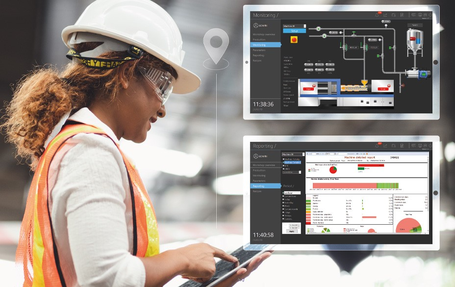

Software Predictivo
Descubre nuestras soluciones de software predictivo diseñadas para mejorar la eficiencia y la fiabilidad de tus operaciones. Nuestro software utiliza algoritmos avanzados para prever y prevenir problemas antes de que ocurran.
Software de Mantenimiento Predictivo
| Tipo | Mantenimiento |
|---|---|
| Descripción | Software que utiliza datos históricos y en tiempo real para predecir y prevenir fallos en equipos. |
| Características | Monitoreo 24/7, análisis de tendencias, alertas automáticas |

Software de Gestión de Activos
| Tipo | Gestión de Activos |
|---|---|
| Descripción | Solución integral para la gestión de activos empresariales, optimizando la utilización y el rendimiento de los mismos. |
| Características | Inventario en tiempo real, informes detallados, gestión de ciclo de vida |
Software de Análisis Predictivo
| Tipo | Análisis |
|---|---|
| Descripción | Plataforma que utiliza algoritmos avanzados de análisis para identificar patrones y prever eventos futuros. |
| Características | Modelos de machine learning, análisis de big data, visualización interactiva |